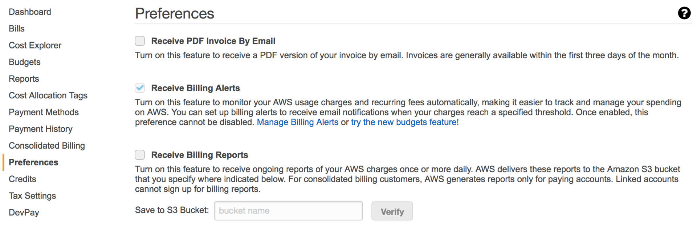
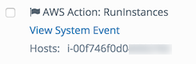
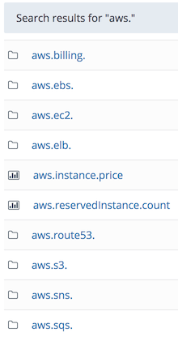

Amazon Web Services (AWS), is a collection of cloud-computing services that provide an on-demand computing platform. Wavefront supports cloud integrations, which allow you to ingest metrics directly from AWS and send them to Wavefront without needing to set up a Wavefront proxy.
You must have Proxy Management permission to set up an AWS cloud integration. If you do not have permission, UI menu selections and buttons required to perform the tasks will not be visible.
Wavefront offers Amazon Web Services (AWS) CloudWatch, CloudTrail, and EC2 integrations.
- The CloudWatch integration retrieves AWS metric and dimension data.
- The CloudTrail integration retrieves EC2 event information and creates Wavefront System events that represent the AWS events.
- The EC2 integration retrieves additional metrics using AWS APIs other than CloudWatch.
Granting Wavefront Read-only Access to your Amazon Account
Adding a cloud integration requires establishing a trust relationship between Amazon and Wavefront by sharing account IDs and an external ID. The external ID can be generated by Wavefront or by your company. If you use an ID generated by Wavefront you run Set up Amazon Account to configure all integrations—CloudWatch, Cloudtrail, and EC2—at once. If you want to use an ID generated by your company, you set up each integration individually.
In summary, the integration options are:
- Set up Amazon Account - Integrate CloudWatch, Cloudtrail, and EC2 data. Choose this option if:
- You are an administrator for your company’s AWS account.
- You want to integrate CloudWatch, CloudTrail, and EC2 data into Wavefront at the same time.
- You can use an external ID generated by Wavefront.
- You want Wavefront to automatically install AWS dashboards.
- Register [CloudWatch | CloudTrail | EC2] - Integrate each type of data individually. Choose this option if:
- You are not an administrator for your company’s AWS account, but will be gathering required information from an administrator.
- You want to integrate CloudWatch, CloudTrail, and EC2 data into Wavefront, but not at the same time.
- You want to use a custom external ID generated by your company.
- You can manually install AWS dashboards. For a list of dashboards and more information, contact support@wavefront.com.
First grant Wavefront read-only access to your Amazon account. Run the Amazon Create New Role wizard where you provide Wavefront account and external IDs. In the Create New Role wizard Review, copy the Role ARN containing the Amazon account ID.

Adding a Cloud Integration
- Select Browse > Cloud Integrations.
- Select Add Integration > <Integration Option>, where <Integration Option> is Set up Amazon Account or Register [CloudWatch | CloudTrail | EC2].
- Configure the integration:
- Common
- Name - Name to identify the integration.
- Role ARN - Role ARN from Amazon account. The format of this property is arn:aws:iam::<Amazon account ID>:role/wavefront.
- Set Up Amazon Account and Register Cloudtrail
- Bucket Name - The S3 bucket containing CloudTrail logs. In AWS, go to CloudTrail >Trails to see the bucket name.
- Prefix - A log file prefix specified when you created the CloudTrail.
- Register [CloudWatch | CloudTrail | EC2]
- External ID - External ID generated by your company used to establish trust between Amazon and Wavefront.
- Register CloudWatch
- Whitelists - see Configuring AWS CloudWatch Metric Ingestion.
- Common
- Click Save. The selected integration(s) are created and added to the Cloud Integrations list.
- Optional. If you selected Set up Amazon Account and want to whitelist AWS instances, volumes, or metrics, click the link in the Name column in the CloudWatch integration type row.
- Configure CloudWatch whitelist properties.
- Click Save.
CloudWatch Integration
The Wavefront CloudWatch integration retrieves AWS metric and dimension data from AWS services using the AWS CloudWatch API. The complete list of metrics and dimensions that can be retrieved from AWS CloudWatch is available at Amazon CloudWatch Metrics and Dimensions Reference. In addition, you can publish custom AWS metrics that are also ingested by the Wavefront CloudWatch integration.
Configuring CloudWatch Metric Ingestion
To configure which AWS metrics to ingest into Wavefront you can whitelist instances, volumes, and metrics:
- Instance and Volume Whitelist fields - Whitelist instances and volumes by specifying EC2 tags (as <key>=<value> pairs) defined on the instances and volumes. For example, organization=<yourcompany>. When specified as a comma-separated list, the tags are OR’d. To use instance and volume whitelisting you must also add an EC2 integration as the AWS tags are imported from EC2. If you don’t specify any tags, Wavefront imports metrics from all instances and volumes.
- RegExp Whitelist field - Whitelist metrics by specifying a regular expression. The regular expression must be a complete match of the entire metric name. For example, if you only want CloudWatch data for elb and rds (which come under aws.rds), then use a regular expression such as: ^aws.(elb|rds).*$. If you do not specify a regular expression, all CloudWatch metrics are retrieved.
Wavefront Source Field
Wavefront sets the value of the CloudWatch metric source field by service:
- EC2 - the value of the hostname, host, or name EC2 tags, if the tags exist and you have an EC2 integration. Otherwise, the source is set to the Amazon instance ID.
- EBS - the Amazon instance ID of the EC2 instance the volume is attached to.
- All other services - the value of the first CloudWatch dimension. The supported dimensions appear at the bottom of the Amazon service metric documentation topic. For example, see Amazon EC2 Dimensions.
Wavefront Point Tags
Wavefront adds the following point tags to CloudWatch metrics:
- accountId - the Amazon account that reported the metric.
- Region - The region in which the service is running. Added to EC2 and EBS metrics only.
- CloudWatch dimensions. The dimensions vary by service. For example, for AWS S3, the BucketName dimension is added as a point tag.
CloudWatch Pricing
Standard AWS CloudWatch pricing applies each time Wavefront requests metrics using the CloudWatch API. For pricing information, see AWS | Amazon CloudWatch | Pricing. After selecting a region in the middle of the page, you can find the current expected price under Amazon CloudWatch API Requests. In addition, custom metrics have a premium price; see the Amazon CloudWatch Custom Metrics section of the pricing page. To limit cost, Wavefront queries the API only every 5 minutes.
As an alternative to using the CloudWatch API for EC2 metrics, you can collect these metrics using a Telegraf collector on each AWS instance. In this case, to prevent CloudWatch from requesting those metrics, you should use the metrics RegExp whitelist to allow all metrics except EC2. For example: ^aws.(billing|instance|sqs|sns|reservedInstance|ebs|route53.health|ec2.status|elb|s3).*$.
Configuring Billing Metrics
The AWS Billing and Cost Management service sends billing metrics to CloudWatch. You configure AWS to produce aws.billing.* metrics by checking the Receive Billing Alerts checkbox on the Preferences tab in the AWS Billing and Cost Management console:

In addition to CloudWatch dimensions, Wavefront adds a Source point tag to billing metrics.
CloudTrail Integration
The Wavefront CloudTrail integration retrieves EC2 event information stored in JSON-formatted log files in an S3 bucket. The CloudTrail integration parses the files for all events that result from an operation that is not a describe, get, or list, and creates a Wavefront System event.
You can search for these events in the Browse > Events page. Such events are prefaced with AWS Action: and include actions such as RunInstances, StartInstances, StopInstances, TerminateInstances, MonitorInstances, UnmonitorInstances, DeleteNetworkInterface, AuthorizeSecurityGroupIngress, CreateSecurityGroup, RequestSpotInstances, CancelSpotInstanceRequests, ModifyInstanceAttribute, CreateTags,CreateKeyPair, DeleteKeyPair, and DeregisterImage. For example:

Click the View System Event link to view details about the event.
EC2 Integration
The Wavefront EC2 integration retrieves additional metrics using AWS API calls other than CloudWatch:
- aws.instance.price - Instances and how much they cost per hour. This metric includes the point tags instanceID, instanceType, availabilityZone, and instanceLifecycle.
- aws.reservedinstance.count - The number of reserved instances in each availability zone by each instance type. This metric includes the point tags instanceID, availabilityZone, and instanceType. This metric appears only if your account has reserved instances.
- aws.ebs.volumesize - The volume size of the elastic block store attached to EC2 instance(s). This metric also includes the point tags Region, volumeID, instanceID, and Status. This metric appears in Wavefront only if your account uses EBS.
- aws.ebs.volumeiops - The volume I/O operations of the elastic block store attached to EC2 instance(s). This metric also includes the point tags Region, volumeID, instanceID, and Status. This metric appears in Wavefront only if your account uses EBS.
Wavefront sets the value of the EC2 metric source field to the AWS instance ID.
Viewing AWS Metrics
You can view AWS metrics by selecting Browse > Metrics and searching for metrics beginning with aws.:

You can drill into the folder for a specific service and click a metric to navigate to a chart that displays that set of data. For example, clicking clicking the folder aws.ec2., then the metric aws.ec2.cpuutilization, and then refining the query by the Region point tag and the topk function yields the following chart:

AWS Aggregate Metrics
All AWS metrics return the following aggregate metrics: average, maximum, minimum, sample count, and sum. To view the aggregate metrics,
-
Search for a specific metric, for example aws.ec2.cpuutilization:

-
Click the metric folder, for example aws.ec2.cpuutilization., to display the aggregate metrics: